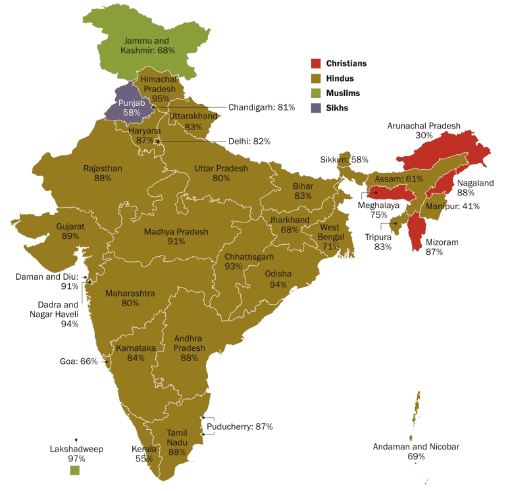

Religions in India
India is a land of diverse religious beliefs, where numerous faiths have coexisted and flourished for centuries. This rich tapestry of religions, including Hinduism, Islam, Christianity, Sikhism, Buddhism, and Jainism, shapes the cultural and spiritual landscape of the nation.
Secularism
The Constitution of India, declares India to be a secular state with no state religion. The Forty-second Amendment of the Constitution of India enacted in 1976 asserts the Preamble to the Constitution of India as secular.
Secularism in India is understood to mean not a complete separation of religion from state, but a state that participates in a neutral manner in the affairs of all religious groups and as well as atheism while maintaining equidistance from all.
Religions in India
Hinduism is an ancient and diverse religion, being the largest religious group in India with around 966 million adherents as of 2011, composing 79.8% of the population. It encompasses various beliefs including monotheism, henotheism, polytheism, panentheism, pantheism, monism, atheism, animism, agnosticism, and gnosticism. The term "Hindu," originally a geographical description from the Sanskrit word "Sindhu" (the Indus River), refers to people from the land of the river Sindhu. Traditional followers refer to Hinduism as Sanatana Dharma, meaning "Eternal Way," and call themselves Sanatanis, although reformist sects like Arya Samaj do not use this term.
Islam is a monotheistic religion centered on the belief in one God and following the example of Muhammad, making it the largest minority religion in India. About 14.2% of the population, or approximately 172.2 million people, identify as adherents of Islam (2011 census), making India the country with the largest Muslim population outside Muslim-majority countries. Muslims form the majority in Jammu and Kashmir and Lakshadweep and have high concentrations in Uttar Pradesh, Bihar, West Bengal, Assam, and Kerala. While the largest denomination is Sunni Islam, there are substantial populations of Shia and Ahmadiyya Muslims, with Indian Shia Muslims estimated to be between 40 and 50 million.
Christianity is a monotheistic religion centered on the life and teachings of Jesus as presented in the New Testament, making it the third-largest religion in India, comprising 2.3% of the population. St. Thomas is credited with introducing Christianity to India, arriving on the Malabar Coast in 52 CE. The tradition among Saint Thomas Christians relates to his arrival at the ancient seaport Muziris on the Kerala coast. Notably, families such as Sankaramangalam, Pakalomattam, Kalli, and Kaliyankal were considered particularly preeminent and historically the most aristocratic Syriac Christian families claimed descent from these lineages.
Sikhism is a monotheistic religion that began in fifteenth-century Punjab with the teachings of Guru Nanak and nine successive Sikh gurus. As of 2011, there were 20.8 million Sikhs in India. Punjab is the spiritual home of Sikhs and the only state where they form a majority. Significant Sikh populations also exist in Chandigarh, Himachal Pradesh, the Jammu division of Jammu and Kashmir, Delhi, and Haryana, all historically part of Greater Punjab. While there is no specific data on the number of Nanak followers (Nanakpanthis) in India, they are estimated to be around 14 crores. Nanakpanthis include various communities such as Sikhligarh, Vanjaarey, Nirmaley, Lubaney, Johri, Satnamiye, and Udaasiyas, who follow Guru Nanak and the Sri Guru Granth Sahib.
Buddhism, an Indian transtheistic religion and philosophy, has about 8.5 million adherents in India, comprising 0.7% of the population. It is mainly practiced in the Himalayas, Sikkim, Arunachal Pradesh, Ladakh, Darjeeling, and the Lahaul and Spiti districts of Himachal Pradesh, with a significant presence in Maharashtra due to B. R. Ambedkar's influence. Ambedkar, Anagarika Dharmapala, and Kripasaran Mahasthavira were key figures in Buddhism's revival in India. The 14th Dalai Lama's arrival in 1959 also spurred a resurgence. Sikkim, joining India in 1975, predominantly practices Vajrayana Buddhism, with Padmasambhava being a revered figure.
Jainism is a non-theistic Indian religion and philosophical system that originated in Iron Age India. Jains make up 0.4% of India's population, approximately 4.45 million people. They are primarily concentrated in the states of Gujarat, Karnataka, Madhya Pradesh, Maharashtra, and Rajasthan.
Judaism, a monotheistic religion from the Levant, has a small but historic presence in India. Historically, the Cochin Jews of Kerala, the Bene Israel of Maharashtra, and the Baghdadi Jews near Mumbai formed significant communities. Since Indian independence, proselyte communities like the Bnei Menashe of Mizoram and Manipur, and the Bene Ephraim (Telugu Jews) have developed. Of the approximately 95,000 Jews of Indian origin, fewer than 20,000 remain in India. Some areas in India are popular with Israelis, increasing local Jewish populations seasonally.
Religion distribution in India
India's religious distribution reflects its rich cultural diversity, with Hinduism being the predominant faith, followed by over 79% of the population. Islam is the second-largest religion, comprising around 14% of the people. Christianity and Sikhism account for approximately 2.3% and 1.7% of the population, respectively, while Buddhism and Jainism, though smaller in numbers, have significant historical and cultural influence. This pluralistic society is marked by a harmonious coexistence of various religious communities, each contributing to the nation's vibrant heritage.
